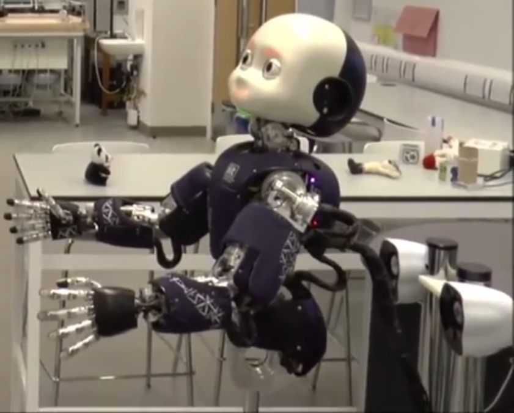

Navigate: Deep GPs | Robotics | Multi-view modelling | Dynamical Systems
Deep Gaussian processes:
Deep belief networks built with Gaussian processes[click for more details]
Main related sources: my PhD thesis and the paper "Deep Gaussian processes", by A. Damianou and N. Lawrence.
A deep Gaussian process (deep GP) is a Deep Belief Network (DBN) formulated as a generative model where an initial input multivariate variable
 is mapped to an observed output multivariate variable
is mapped to an observed output multivariate variable  through a cascade of hidden layers
through a cascade of hidden layers  .
In contrast to traditional DBNs, here the transformation between layers is probabilistic and modelled with GPs.
This leads to a powerful model (which, overall, is not a GP) which can learn from complex data in a non-parametric fashion,
as can be seen in the following figure (left) which represents samples from such a model. The video on the right is a short demonstration.
.
In contrast to traditional DBNs, here the transformation between layers is probabilistic and modelled with GPs.
This leads to a powerful model (which, overall, is not a GP) which can learn from complex data in a non-parametric fashion,
as can be seen in the following figure (left) which represents samples from such a model. The video on the right is a short demonstration.

An illustrative summary, examples and more details can be found in the link above.
Synthetic Memory System for the iCub robot
LINK to a CNN video describing the work carried out at Sheffield robotics, including my work with the iCub.
Main related paper: "A top-down approach for a synthetic autobiographical memory system", by A. Damianou, C. H. Ek, L. Boorman, N. Lawrence, T. Prescott.
 My focus in this project is on development of machine learning tools for efficient and realistic modelling of a series of experienced events, e.g. as perceived by a robotic agent. The goal is to build a synthetic artificial autobiographical memory (SAM) system for the iCub robot, based on Bayesian latent variable models.
Preliminary (offline) demonstration
The preliminary demo below uses the MRD model (described below) as a core. Given multiple perceptual streams (e.g. different perceived events that are temporally aligned) the task is to learn a compressed latent (i.e. "memory" or "concept") space where the total signal from all views is decomposed into shared and private parts in a non-redundant. Importantly, this has to happen automatically without any supervision. The redundancy elimination aspect means that the learned concepts must be "pure". For example, the concept of "rotation" has to only be learned once, if we observe the simultaneous rotation of multiple objects.Manifold Relevance Determination:
Automatic Bayesian modelling of multi-view data[click for more details]
Main related paper: "Manifold relevance determination", by A. Damianou, C. H. Ek, M. Titsias, N. Lawrence.
Video description & results
Variational Gaussian Process Dynamical Systems:
Bayesian modelling of high-dimensional dynamical sytems[click for more details]
Main related papers: "Variational Gaussian Process Dynamical Systems" and ""Variational Inference for Latent Variables and Uncertain Inputs in Gaussian Processes", by A. Damianou, M. Titsias and N. Lawrence. The code to reproduce these experiments has been incorporated into the Bayesian GP-LVM (vargplvm) toolbox of Prof. Neil Lawrence.
All of the videos presented here are in reduced resolution. The original videos (where the model was directly applied) were high-dimensional: 288 x 360 pixels for the "missa" video, 360 x 640 pixels for the "dog" video and 1280 x 720 (HD) for the "ocean" video.
The videos and README files can be downloaded from the following links:
Samples
Collaborators:
Prof. Neil Lawrence's ML group (Univ. of Sheffield)
Dr. Michalis Titsias (AUEB, Greece)
Dr. Carl Henrik Ek (KTH, Sweden)
Colleagues at the Sheffield Robotics